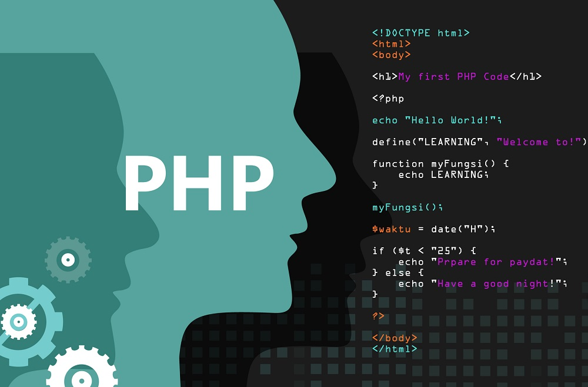

-
Perl
Perl (Practical Extraction and Report Language) là ngôn ngữ kịch bản mã nguồn mở có cú pháp
tương tự như C. Perl chạy ở chế độ nền phía server tạo nội dung web theo cách thức ẩn đối với
người xem. Năm 1987, lrry Wall xây dựng và phát triển Perl như là phiên bản cải tiến của awk
với mục đích thực hiện tự động một số tác vụ quản trị hệ thống Unix (awk là một chương trình
xử lý văn bản của Unix) . Sau đó Perl được phát triền dần và phổ biến với nhiều dạng ửng dụng.
Perl có tính đối tượng, nhờ vậy việc bổ sung thư viện mới rất dễ dàng. Nó thích hợp cho cả ứng
dụng web phức tạp lẫn các tác vụ xử lý dữ liệu đơn giản.
Đã có thời tất cả những việc tạo trang web động có lập trình đều dùng Perl, trước khi có những
công nghệ khác như ASP, JSP, PHP... và hiện Perl vẫn là một trong những ngôn ngữ được dùng phổ
biến nhất để viết các ứng dụng web.

Hầu hết các máy chủ web hiện nay đều hỗ trợ Perl. Apache có hỗ trợ miễn phí tích hợp trình
dịch Perl mod-perl. Điều này không chỉ giúp tăng tốc mã lệnh Perl mà còn cải thiện hiệu suất
nhờ mod-perl lưu lại các mã lệnh biên dịch trong bộ nhớ. Mod_perl kết hợp với một số công nghệ
khác cho phép xây dựng các website cao cấp, nổi bật nhất là hai công nghệ HTML::Embperl và
HTML::Mason.
Các giải pháp thương mại của Activestate và Binary Evolution cũng giúp tăng tốc Perl theo cách
thức tương tự như mod-perl. PerlEx của ActiveState tăng tốc chương trình CGI/PERL cho IIS
trong khi sản phẩm của Binary Evolution dùng cho Netscape, Apache, và IIS trên cả nền Windows
và Unix.
Có rất nhiều tài liệu trên Net về Perl cũng như nhiều thư viện chương trình tiện ích miễn phí.
Bạn có thể tìm thấy những mô đun viết sẵn ở website CPAN (Comprehensive Perl Archive Network -
www.cpan.org). Ngôn ngữ Perl hiện đang phát triển đi xa hơn thiết kế ban đầu của nó.
-
ASP
Công nghệ Microsoft Active Server pages (ASP) đi cùng với Microsoft Intemet Information Server
(IIS). ASP hỗ trợ nhiều ngôn ngữ kịch bản như PerlScript, JScript và VBScript. PerlScript dựa
trên ngôn ngữ Perl, JScript dựa trên ngôn ngữ JavaScript, nhưng ngôn ngữ mặc định của ASP là
VBScript, một ngôn ngữ kịch bản dễ học, là tập con của ngôn ngữ Visual Basic - một trong những
ngôn ngữ lập trình phổ biến nhất hiện nay. Công nghệ ASP cho phép trộn nội dung HTML tĩnh với
mã lệnh kịch bản thực thi ở môi trường server để tạo ra kết quả động.
Ưu điểm nổi bật nhất của ASP là khả năng dùng thành phần COM và ADO (Activex Data Object),
nhưng cũng chính khả năng này làm cho chương trình ASP phức tạp và khó viết hơn. Khi cần phát
triển, bạn có thể tạo thành phần COM riêng. Microsoft khuyến cáo xây dựng thành phần COM để xử
lý mức luận lý. Thành phần COM có thể phát triển bằng Visual Basic, Visual C++ hay Java.
Tuy nhiên, với môi trường máy chủ dùng chung, thường các công ty cung cấp dịch vụ máy chủ giới
hạn chỉ cho phép bạn dùng VBScript.
Trở ngại lớn nhất của ASP là chỉ dùng trên IIS chạy trên máy chủ Win32. Có một số sản phẩm của
các hãng thứ ba cho phép ASP chạy trên môi trường và máy chủ web khác như các sản phẩm thương
mại InstantASP của Halcyon, Chili!Soft của Chili!Soft và sản phẩm miễn phí OpenASP của
ActiveScripting.org. Có hai phiên bản Perl cho ASP: phiên bản Unix (Apache::ASP) dùng với
Apache và phiên bản Windows PerlScript của hãng ActiveState.
Việc cài đặt môi trường máy chủ hỗ trợ ASP rất đơn giản, IIS mặc định hỗ trợ sẵn ASP. Personal
Web Server cung cấp môi trường chạy ASP cho Windows 95, 98. Công cụ Visual Interdev rất mạnh,
giúp tạo trang ASP đơn giản và nhanh chóng. Có rất nhiều website, sách và mã nguồn miễn phí
cho ASP. Đây là một lợi thế.
ASP.NET (ASP+) là bước phát triển mới của công nghệ ASP dùng với nền tảng NET. Ngôn ngữ chính
dùng để phát triển trang ASP.NET (.aspx) là VB.NET, C#. Ngoài ra ASP.NET còn hỗ trợ nhiều ngôn
ngữ khác như JScript.NET, Smalltalk.NET, Cobol.NET, Perl.NET...
-
JSP
Java Server Pages (JSP) là sự mở rộng của công nghệ JavaServlet, một thành phần trong chuẩn
J2EE của Sun. Với JavaServlet, bạn phải xử lý đầu vào HTTP và đầu ra HTML trong lớp Java, bạn
cần có kiến thức lập trình để xây dựng các ứng dụng phức tạp. Với JSP bạn có thể tách riêng
lớp hiển thị HTML ra khỏi lớp Java xử lý nghiệp vụ phức tạp. Điều này có nghĩa là người phát
triển có kinh nghiệm ngôn ngữ kịch bản, hay thậm chí người thiết kế web có thể viết mã lệnh
hiển thị đơn giản, trong khi người phát triển có kiến thức về Java tập trung viết JavaServlet
hay JavaBean đề giải quyết nghiệp vụ phức tạp.
Tương tự ASP, JSP cũng thực hiện phép trộn nội dung HTML tĩnh với mã lệnh kịch bản thực thi ở
môi trường server để tạo ra kết quả động. JSP dùng ngôn ngữ kịch bản mặc định là Java; tuy
nhiên theo đặc tả kỹ thuật thì cũng có thể dùng các ngôn ngữ khác. JSP có ưu điểm so với ASP
là sau lần thực thi đầu tiên thì mã biên dịch (Servlet) của trang JSP được lưu lại trong bộ
nhớ của máy chủ web và sẵn sàng đáp ứng cho các yêu cầu truy cập sau đó (trang ASP/VBSCRIPT
hay Asp/jscript phải được dịch lại với mỗi yêu cầu). Lợi thế của JSP là sử dụng được toàn bộ
sức mạnh của ngôn ngữ Java với các tính năng khả chuyển, chạy được trên nhiều nền tảng hệ
thống và máy chủ web, mã lệnh hướng đối tượng, bảo mật an toàn...
Hiện chưa có nhiều dịch vụ đặt web hỗ trợ JSP. Tuy Java miễn phí nhưng các côngcụ phát triển
Java và phần mềm máy chủ Java khá đắt. Các công cụ phát triển trang JSP tốt là Borland
Jbuilder, IBM WebSphere Studio. Một số phần mềm máy chủ Java hỗ trợ JSP miễn phí như Tomcat,
JONAS.
Server-side JavaScript (SSJS) là sự mở rộng của JavaScript, ngôn ngữ kịch bản phổ biến chạy ở
trình duyệt máy khách có cú pháp giống như C, mặc dù có tên gọi tương tự nhưng nó không phải
là Java. SSJS có các tính năng tích hợp hỗ trợ cơ sở dữ liệu và email, quản lý phiên làm việc
và khả năng liên tác với các lớp Java dùng công nghệ Livewire của Netscape. SSJS chỉ chạy trên
máy chủ web Netscape.
-
PHP
Năm 1995 , Rasmus Lerdorf tạo ra PHP nhằm giải quyết việc viết lặp đi lặp lại cùng đoạn mã khi
tạo các trang home (vì vậy PHP được viết tắt từ Personal Home Page). Ban đầu, tác giả chỉ có ý
định tạo bộ phân giải đơn giản để thay thế các thẻ lệnh trong file HTML bằng các đoạn mã lệnh
viết bằng C. Dự án này đã được phát triển thành ngôn ngữ kịch bản mã nguồn mở PHP - Hypertext
Preprocessor được cài đặt cho khoảng 20% máy chủ web trên Internet, theo số liệu khảo sát của
công ty Netcraft.
PHP tương tự JSP và ASP với tập thẻ lệnh dùng cho trang HTML. Điểm đặc biệt là PHP được phát
triển hoàn toàn cho nền tảng web, chính vì vậy mà các ứng dụng viết bằng PHP rất ngắn gọn so
với VBScript hay JSP. Đây cũng chính là điểm mạnh của PHP so với Perl.

Cú pháp PHP mượn từ nhiều ngôn ngữ khác như C, Java, Perl... PHP có thể giao tiếp với nhiều hệ
CSDL như Sybase, Oracle, Informix, Postgres và cả Microsoft SQL. Không chỉ có khả năng thao
tác CSDL, PHP còn có nhiều khả năng khác như IMAP, SNMP, LDAP, XML... PHP chạy trên hầu hết
các nền tảng hệ thống. Trình máy chủ phân giải mã lệnh PHP có thể tải về miễn phí từ trang web
chính thức của PHP. Có lẽ yếu tố hấp dẫn nhất của PHP là nó hoàn toàn miễn phí. Với máy tính
cấu hình vừa phải chạy Linux, cài đặt Apache, PHP và MYSQL, bạn sẽ có máy chủ có thể phục vụ
được nhiều ứng dụng web tương đối. Toàn bộ chi phí hầu như chỉ là thời gian bạn bỏ ra để cài
đặt các phần mềm. PHP được xem là một thay thế cho Perl. PHP không thể làm được nhiều như
Perl, thế nhưng chính sự hạn chế này làm cho PHP dễ học và dễ dùng. Nhiều nhà phát triển dùng
kết hợp cả hai: Perl dùng cho những tác vụ chạy bên dưới còn PHP dùng cho việc xử lý bề mặt.
Komodo của Active State Corp là công cụ miễn phí dùng để phát triển trang PHP.

-
ASP.NET
Có thể nói là thế hệ sau của ASP nhưng hỗ trợ tối đa mong muốn của lập trình viên và khắc phục
được những điểm còn hạn chết trong ASP, chính vì vậy ASP.NET đang dần khẳng định là một trong
những lựa chọn số một của người xây dựng website.
Mặc dù ra đời muộn cùng với sự ra đời của Net framework nhưng ASP.NET đã chứng tỏ mình là công
cụ mạnh mẽ và hỗ trợ lập trình hết sức linh hoạt và là sự lựa chọn hàng đầu của các lập trình
viên. Ngoài khả năng thao tác dễ dàng trong thiết kế giao diện ASP.NET còn là công nghệ hỗ trợ
nhiều ngôn ngữ lập trình đặc biệt trong số đó là VB.NET, C#,…. Là những ngôn ngữ đang rất được
ưa chuộng bởi các lập trình viên hiện nay.
Việc kết nối CSDL dễ dàng cũng là một trong những ưu điểm nổi bật của ASP.NET với sự hỗ trợ
của ADO.NET và mới đây nữa là sự ra đời của LinQ với khả năng kết nối CSDL dễ dàng ASP.NET
đang dần hoàn thiện để trở thành công nghệ thống trị trong thế giới website.